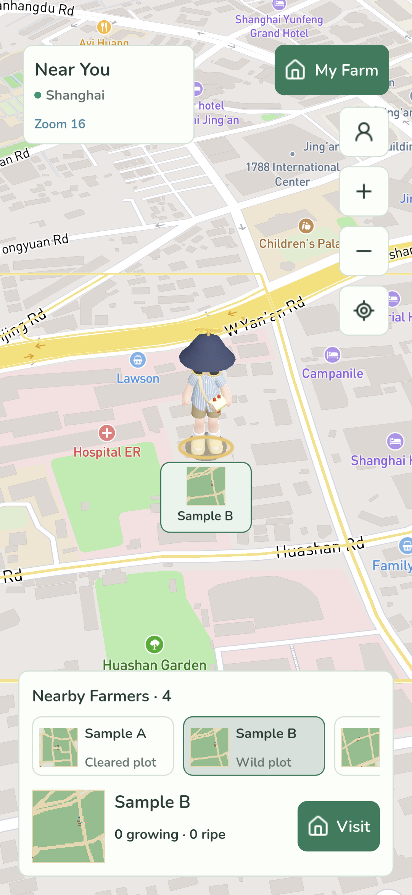
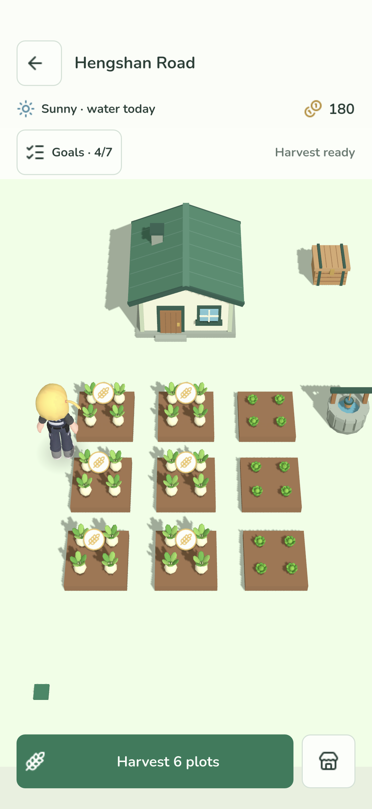
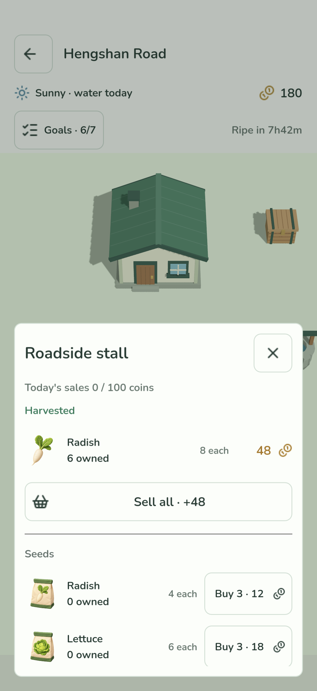
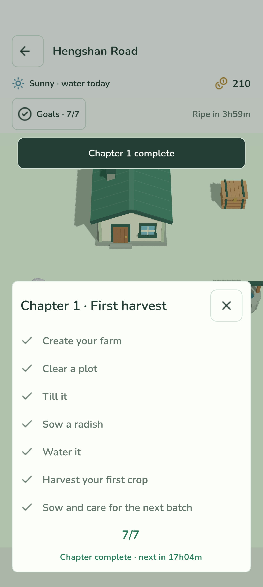
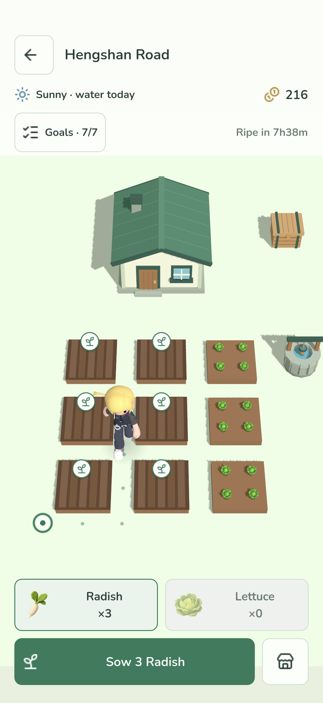
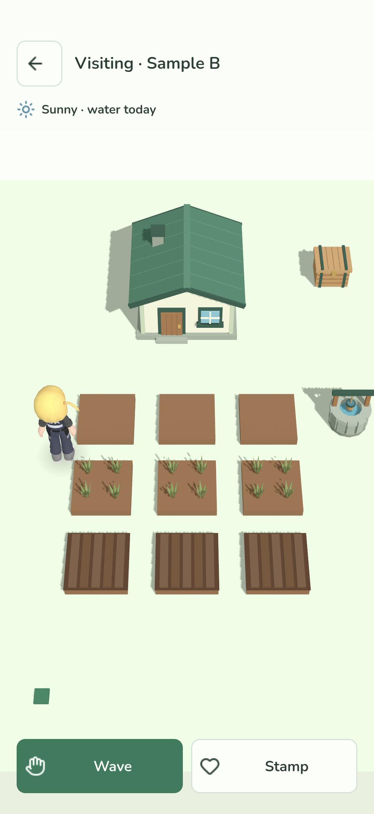
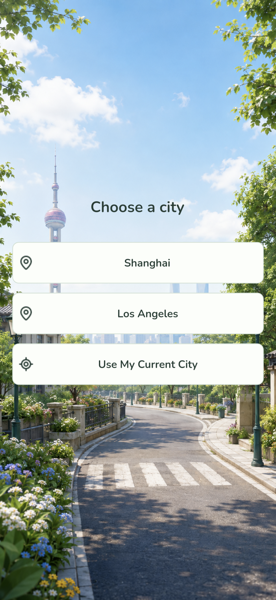
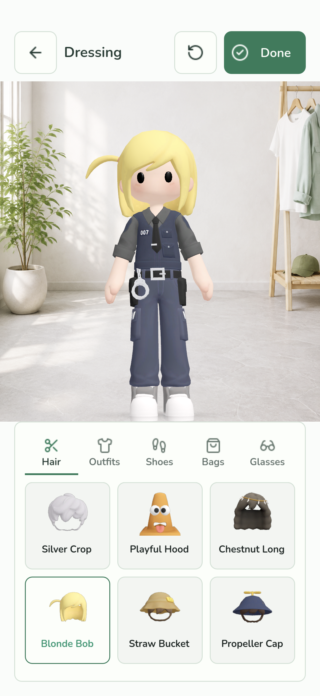
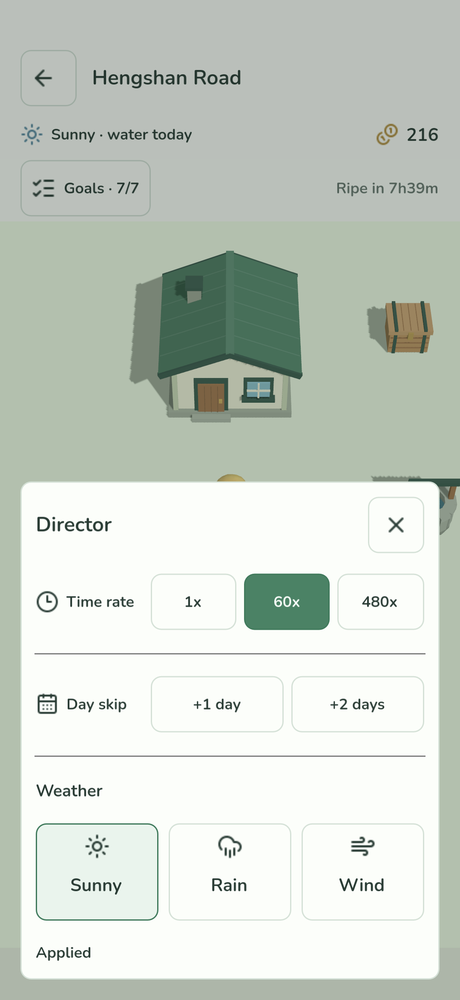

街角四季 · 操作指南
点一块田，人物先走过去，再完成这块田的下一步。
初始农场为三行九格，扩建后增加第四行；镜头会为全部田块和底部选种栏留出空间。底部主按钮批量处理同一步骤；点空地可移动，落点圆环与路径圆点显示目的地。单摇杆已移除。









地图与拜访
- 冷启动选择城市。已有农场时，My Farm 进入自家。连接支持自由选址的配套服务时，首次建场先选择蓝图缩略图，按 Place Farm，再拖动地图把位置标记移到希望放置的地方，最后按 Create Farm。不再局限于三个固定地点；超出支持区域时不可创建。
- 地图展示农场的蓝图缩略标记和主人角色形象。点角色、缩略标记或底部 Sample A、Sample B 等条目，相机会飞到该农场，选中环、边界和访问预览同步更新。
- 同一位置有多个农场时，显示人数入口。点人数后从展开的列表中选择具体农场；列表上的关闭图标返回全部附近农场。
- Visit 进入当前选中的访客农场。可以点击移动、Wave 挥手和 Stamp 留印章；访客不操作主人的田地。返回后可以继续切换其他农场，My Farm 始终进入自家。
- 右侧 ＋ / −、双指捏合、双击地图均可缩放。开放 15–18 级；继续超过边界会轻微伸缩后回弹。单指拖动保留惯性。
- 准星按钮重新聚焦自家农场，同时收起其他农场的访问预览。人物图标进入换装；完成后返回地图。
自由选址已在本地隔离的真实数据库/HTTP 服务和真机上验证，配套后端尚未发布到当前公网服务。连接旧服务建场时会提示 This server does not support choosing a farm location yet；不会悄悄建到旧固定点。已有农场的进入、种田和本轮 UI 改进可以继续使用。
之前地图空白是客户端隐藏标记、角色锚点与农场位置不一致造成的。附近列表已有服务端公共农场和两座系统示例；当前显示的是快照对应的角色形象，不代表对方实时在线或移动。
种田与移动
- 荒地：点田或 Clear 9 plots 清理；下一步图标变成铲子。
- 空地：Till 翻土。出现可播种地块后，底部显示种子选择和库存。
- 首次教学先播种并照料 6 格 Radish，等待首次收获。首收后可选择 Radish 或 Lettuce，再点田或 Sow 播种；后续解锁胡萝卜、洋甘菊后也会出现在这里。
- 点田进行照料：晴天浇水 Water、雨天疏水 Drain、风天加固 Shelter。同一批操作包含不同田况时，主按钮显示 Tend，实际逐格执行正确照料。
- 照料完成才开始生长；右上 Ripe in 显示最近成熟时间。成熟后自动出现麦穗提示和 Harvest，无需离开场景刷新。
- 首收后可到摊位卖菜、补足 6 颗萝卜种子，搭配保留的 3 颗生菜种子，重新种满并照料九格，完成首章。卖菜本身不是章节完成条件。
天气信息表示今天的田况；已播种作物按播种时记录的照料要求处理，因此跨日回来不会因为天气变化而照料失败。
移动与操作反馈
- 点可到达的空地：绿色落点圆环和路径圆点；到达后淡出。点不可到达位置：珊瑚色反馈和 Can't reach that spot。
- 点田或田上小图标：人物先走过去，主按钮显示 Walking…，开工后显示 Clearing… 等动词，当前田格有细金色描边和进度环。
- 主按钮上方显示进度条及剩余地块。旁边的 × 取消未开始的任务；正在执行的动作完成后停止。
- 拖过一排田会依次加入每格当前可做的动作。点空地会取消后续劳作，当前动作完成后再移动。
地块上的小图标
提示保持约 20 个逻辑像素，图形约 12 像素；镜头变化不让气泡无限变大。相邻提示过近时会避让隐藏，田格本身仍可点击。没有可执行动作时不显示提示。
| 图形 | 地块状态 | 下一步 |
|---|---|---|
| 荒地 | 清理 | |
| 已清理 | 翻土 | |
| 已翻土 | 播种 | |
| / / | 已播种，待照料 | 浇水 / 疏水 / 加固 |
| 已成熟 | 收获，之后直接再播 |
作物时间
| 作物 | 解锁 | 成熟时间 | 卖价 / 种子价 |
|---|---|---|---|
| Radish 萝卜 | D0 | 4 小时；开局赠送的 6 颗为 3 分钟 | 8 / 4 |
| Lettuce 生菜 | D0 | 8 小时 | 12 / 6 |
| Carrot 胡萝卜 | D2 | 12 小时 | 16 / 8 |
| Chamomile 洋甘菊 | D3 | 18 小时 | 19 / 10 |
摊位、目标与提示
- 顶部 Goals 打开当前章节目标；D0 显示七个步骤，D1–D6 显示各章两项正式目标。标题、勾选和完成状态以服务端为准，不会把仍在生长的旧生菜当成新一批。
- 完成后显示 Chapter complete 和下一章倒计时。按农场所在城市凌晨 4 点换日，每个玩家日最多开启一章，漏一天不跳章。倒计时到期会自动刷新；D6 完成后显示 Week complete。
- 底部商店图标打开 Roadside stall。收成用作物图标，种子用对应种子袋图标；每行显示库存、单价和总价。Sell all · +48 汇总售出，Buy 3 · 12 买 3 颗种子。每日摊位销售额度为 100 金币，已用额度显示在标题下。
- 一次只显示一个弹窗。目标、摊位和导演面板打开后，背景变暗、底部农场操作隐藏；点击 ×、遮罩或系统返回键先关闭弹窗。
- 交易、拒绝原因与无法到达的反馈显示在状态区下方，文字自动换行，约 3 秒消失。断网横幅为 Offline · reconnecting。
- This crop needs different care 表示服务器拒绝照料；This bed isn't unlocked yet 表示预留田畦尚未解锁；资金或种子不足时相应按钮不可用。








地点、居民与第一周
- 地图附近列表切到 Places，进入苗圃、小馆或庭院。地点随服务端章节开放，返回会恢复原地图；底部图标页签分别打开居民、收获用途、工程或成长、故事和手账。
- 农场 Goals 旁的手提袋打开 Harvest & home，可交教学篮、领取补助、决定收成用途、预留工程材料及选择成长。预留材料不会被出售、赠礼或料理消耗。
- 居民支持分段对话、请求和按线索赠送作物。D2 选定生菜用途后，再与小馆主人交谈，听到针对该选择的回应。D6 庭院三人同场时，可点击居民姓名切换对象。
- D3 小馆厨房开放沙拉和洋甘菊茶。第一份沙拉做好后，继续共同备餐对白并确认分享；沙拉可以交请求，料理也可以在摊位出售，茶另有回购入口。
- 苗圃需要累计交付 2 个胡萝卜和 4 份洋甘菊。D5 可切换两种入口外观；成长购买在排工具与第四畦中二选一。购入后可在庭院预览、移动、撤销和保存六种摆件，离开未保存布置时会确认保存或丢弃。
- D6 工程完成后，在庭院故事页加入聚会，最后一段确认才记录共同事件。六次收成用途里赠礼或保留达到四次，会获得生活优先结局、两页手账和个性化合照站位；出售优先也有完整结局。
- 合照现场使用当前玩家装扮、三位居民和苗圃外观，点击 Save photo 保存实际渲染的照片。周总结记录完成时的数值，之后买卖仍会改变实时钱包。
- 请求结束但结果不明时，先点击相应页面的检查按钮；农场顶部会出现重新检查图标，正常照料请求进行中不会因此闪现。普通 APK 已在发送前保存未确认命令；强退后以同一安装账号、同一服务器地址重进，会先确认农场，再用原请求标识检查或恢复该动作。等待权威状态恢复后再继续买卖、赠礼、料理或保存布置，避免重复扣料。
此前桌面和模拟器证据保留在G3 阶段记录中。本次 vivo 已通过出售优先扩地路线的连续七日真实触控：最终 200 金币、301 XP、四畦十二格，摊位结算 95/100，余款不足收购的两颗萝卜保留。生活工具路线主线、普通包强退恢复、六种摆件、五段事件和两种合照的详细证据见本轮真机记录；演示顺序见十五分钟演示脚本。自动化使用 QA 时间控制，不能代替正常种植节奏或人工演示验收。


城市与换装
- 城市页直接选择 Shanghai、Los Angeles，或按 Use My Current City 请求定位。定位失败后仍可手动选择。
- 地图人物按钮打开 Dressing。房间中间是实时角色；拖动角色区域可转身，点击角色可在全身与当前分类近景间切换。
- 下方五个图标分类分别为 Hair、Outfits、Shoes、Bags、Glasses。点击缩略图立即试穿；绿框表示当前选择。部件较多时保持三列两行，短屏采用紧凑布局。
- 右上旋转箭头恢复默认装扮；Done 等待装配完成后保存。左上返回丢弃本次未保存更改。Loading / Trying 表示正在准备或试穿。
查看城市、换装、导演设计稿与此前 UI 真机检查的并排对照。画面保留 1080×2344 的原始比例；人物装扮、天气和导演倍率取决于截图时的存档状态。








验证与当前限制
此前正式章节推进检查（SGODOT-41）：服务端全量 259/259 通过，包含真实 PostgreSQL、上海/洛杉矶时区与夏令时、幂等、重连和显式领域版本迁移。该阶段证据见章节验收记录。本页旧 vivo 图与 7/7 数字属于更早的 UI 验证，不代表新规则下章节已完成。
此前 UI 阶段的 Metal 全量回归 519/519 项通过，70 个套件无错误、失败、跳过或孤立节点。当时最后的地图装扮刷新修复另通过 29 项定向回归。地图切入农场的背景不透明像素测试及透明负对照通过。真实 HTTP 种田流程 42/42 通过，实际等待了教学萝卜 180 秒成熟，并完成收获、卖菜和买种子。该阶段 APK 的详细报告及校验值见设计验收记录。
此前 UI 阶段的 APK 安装到 vivo 后，已验证选址、清理、翻土、成熟、收获、取消、移动、卖菜、买种子、目标、访客、导演及换装界面。卖出萝卜后金币 180→228，买三颗种子后 228→216。农场和换装不再透出底层地图。当时最终包保存金发后地图即时更新，试穿银发后按返回取消，地图和存档仍保留已保存的金发。
此前 UI 验证曾恢复并进入原 Yuyuan Road 农场：128 金币、旧目标 7/7、九格生长作物。本次 G3 测试结束后也已独立完成原配置和装扮的字节校验、默认地图入口检查、临时服务连接与测试文件清理；手机保留最新普通 APK。完整校验和发布边界见G3 真机记录。

导演面板通过长按农场路名 3 秒打开。时间倍率、跳日和天气按钮会修改服务端 QA 农场状态，仅供测试使用。
小屋、井和木箱已换成原创低模环境，并在此前 UI 阶段的真机画面中显示。当时记录的井边裁切、旧出口标记等观感差异保留为历史证据；本轮修正及复测见 G3 真机记录。公共农场使用快照，没有实时多人位置同步。自由选址配套后端尚未发布到公网。四张认可设计稿已用于当前布局、图标与 PNG 素材实装；具体差异与验证结果见设计验收记录。